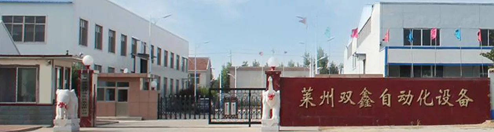
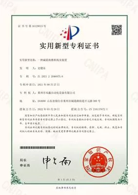
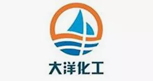
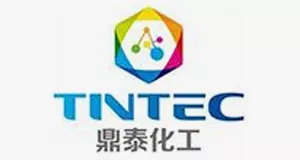
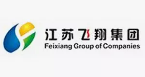
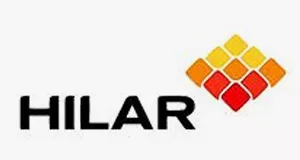
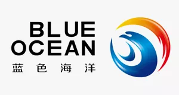

关于我们
莱州市双鑫自动化设备有限公司落户于海滨之城烟台莱州，这里气候宜人，海鲜盛名，是重要的人才聚集地。商贸加工业发达，盛产黄金、大理石、镁石、盐等。化工机械，塑料机械，盐业机械，理石机械设备久负盛名。我公司专业生产海参分选机，鲍鱼分级机，三七分选机，海参加工设备，清洗、蒸煮等设备。
莱州市双鑫自动化设备有限公司是山东理工大学定点合作实习单位，专业研究发展食品重量分选设备，自动上料分选机设备。
莱州双鑫自动化真诚期待与新老客户合作，共创未来。
大河涛涛，急流搏翔，我们信心已满，志在必得。以人品做精品，以人品为纽带，精品为穿线。树立你们与我们的协作进取，旭日东升，合力做事，颠覆传统，做对社会有用的企业，实现人生的真诚梦想，回眸远行。莱州双鑫自动化真诚期待与新老客户合作，共创未来。


企业文化

诚信
诚信是双鑫的核心价值，承诺思想行动一致客观证明有信用。相反无诚信者是伪君子。有关诚信在古今中外都有谈及包括理学、宗教、专业操守、人事管理及政治学《君王论》。
务实
务实就是讲究实际、实事求是。就是中国文化精神的体现，它排斥虚妄，拒绝空想，鄙视华而不实，追求充实而有活力的人生，创造了中国古代社会灿烂的文明。务实精神作为传统美德仍在我们当代生活中熠熠生辉。
创新
创新是指以现有的思维模式提出有别于常规或常人思路的见解为导向，利用现有的知识和物质，在特定的环境中，本着理想化需要或满足社会需求，而改进或创造新的事物、方法、元素、路径环境，并能获得一定有益效果的行为。
合作伙伴




